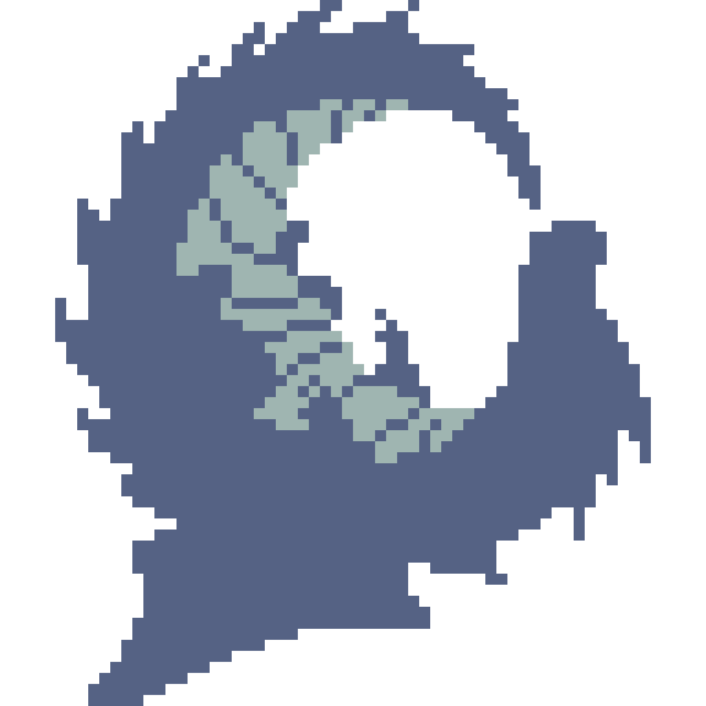

Home
About
Gallery
Commission
Contact

關於也龍
我是也龍，也可以叫我WTDragun。
我是一名像素美術師，擅長於像素動畫和低像素風格。
目前正在經營社團【龍與尾巴亭】。
接案範圍包括人物、背景、遊戲美術、直播過場、DC表情符號和貼圖。歡迎來信詢問。
以往的像素委託，由於像素知識不普及，也需要來回確認想法一致，
導致了高度的溝通成本。 有鑑於此，希望能藉著【也龍與像素教學】，將像素藝術的知識帶入ACG圈子中。
透過建立【龍尾巴市集】，維持品質的同時，降低像素作品的成本。
讓各位可以開開心心的欣賞屬於自己的作品！